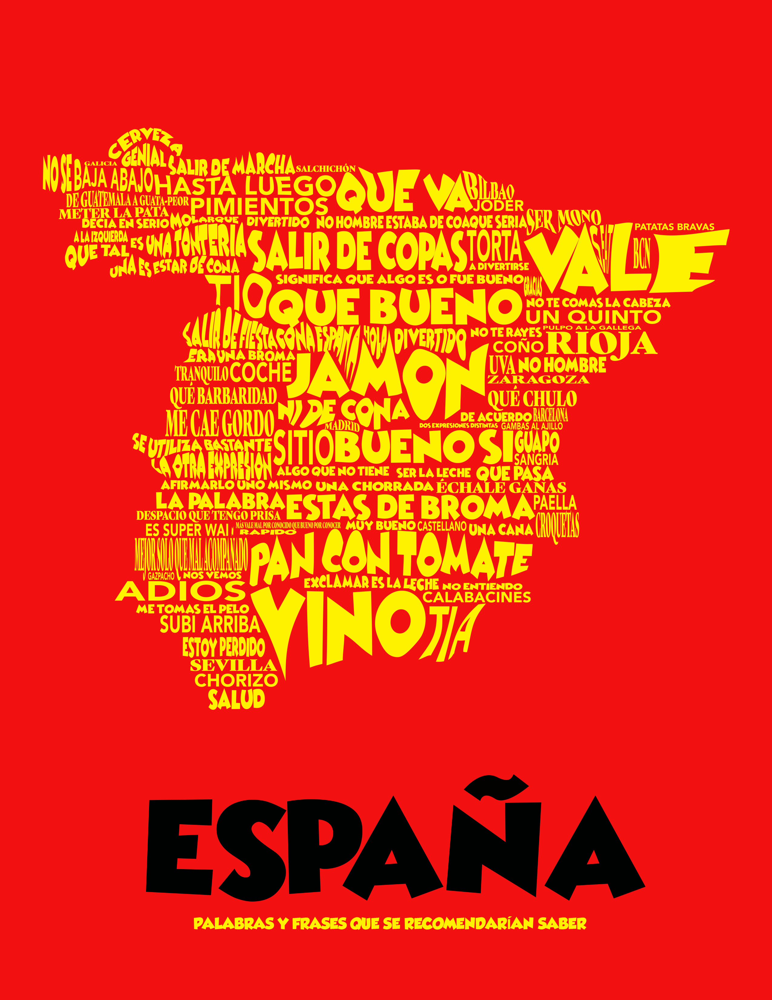

Visual Creative with over 20 years experience working for various retailers; delivering visual merchandising, in store marketing and project management expertise which represents a unique combination of disciplines. Personally, I have demonstrated drive and determination to consistently achieve success as a leader in all of the organizations I have worked with. My passion lies in establishing systems and processes which allow team members to achieve objectives. By empowering team members in decision making to achieve acceptance of decisions and approaches they can deliver project objectives within time, resource, and budgetary constraints. My success can largely be attributed to facilitating cooperation, establishing openness and creativity; motivating teams to inspire a sense of teamwork and instilling ownership and urgency throughout each phase of design. I believe in designers with a broad skill set who can provide solutions to everyday problems and needs. One must have the abiltiy to see past themselves to keep the organization moving forward while maintaining relevance.
Web Design
Assertively exploit wireless initiatives rather than synergistic core competencies.
Interface Design
Credibly streamline mission-critical value with multifunctional functionalities.
Project Direction
Proven ability to lead and manage a wide variety of design and development projects in team and independent situations.



DIRECTOR OF CREATIVE OPERATIONS
2013-2016
Responsible for managing all relationships within the creative departments and Senior Staff. Served as the primary liaison for all creative efforts driving the production of creative deliverables , timelines and resources on a per project basis while mananging the execution of all creative and communications projects and the allocation of internal/external creative resources and budgets.
ASSISTANT DIRECTOR OF VISUAL MERCHANDISING
2007-2011
Progressively reconceptualize multifunctional "outside the box" thinking through inexpensive methods of empowerment. Compellingly morph extensive niche markets with mission-critical ideas while developing, delivering and communicating visual concepts and strategies to promote retail brands, products and services in-store, in catalogues and online content.
WORKSPACE AND LICENSED PRODUCT BUYER
2004-2007
Work closely with vendors, maintaining positive relationships while negotiating specs, pricing, and deadlines. Work independently and prioritize job duties, as well as prepare cost analyses and competitive retail strategies for senior leadership team.
VISUAL MERCHANDISING MANAGER
1993-2005
Develop specific strategies for improvement of store ambience and display content and fixtures for various retail and visual merchandising operations to develop long and short term financial objectives while executing visual merchandising signage and providing solutions to specific marketing requirements and promotional events.
University Of Central Florida - Orlando, Florida
Dual Major, Emerging Media Arts and Education — 4.0 GPA
Seminole State College - Orlando, Florida
Digital Media - Graphic Design Concentration — 4.0 GPA